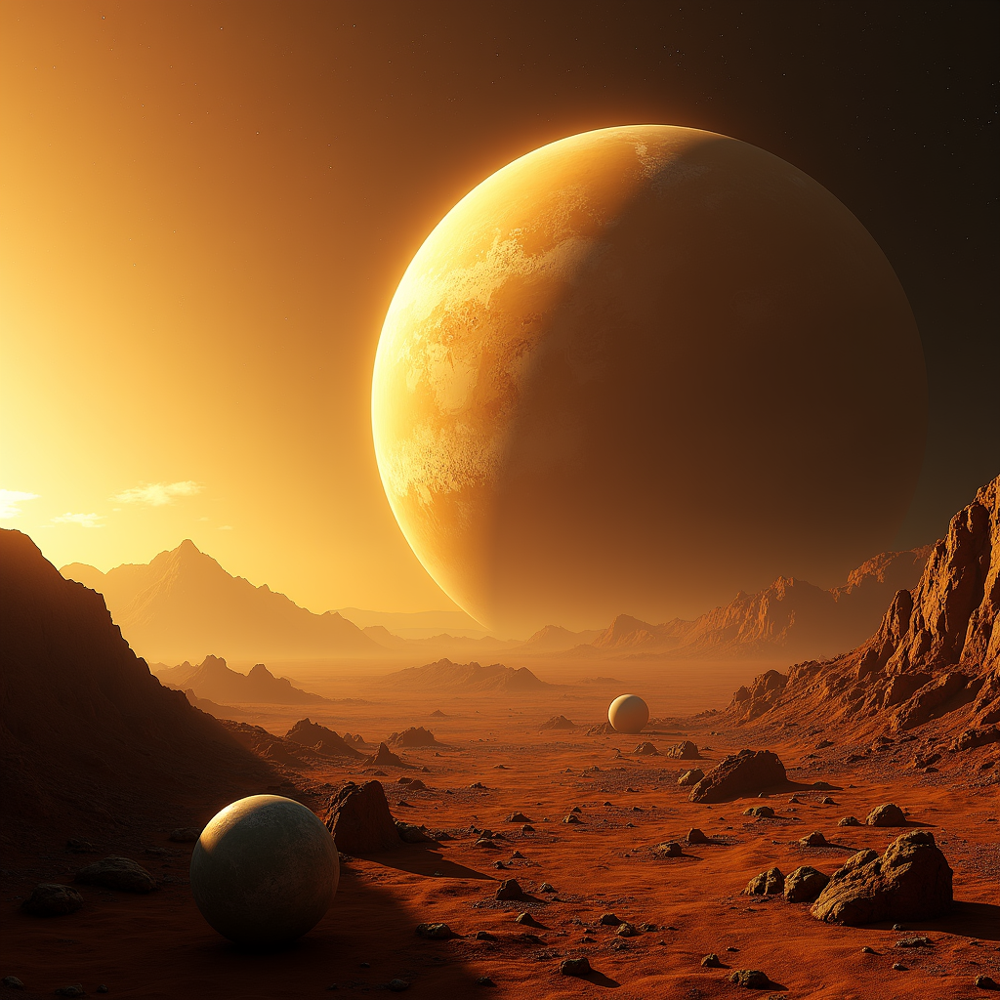
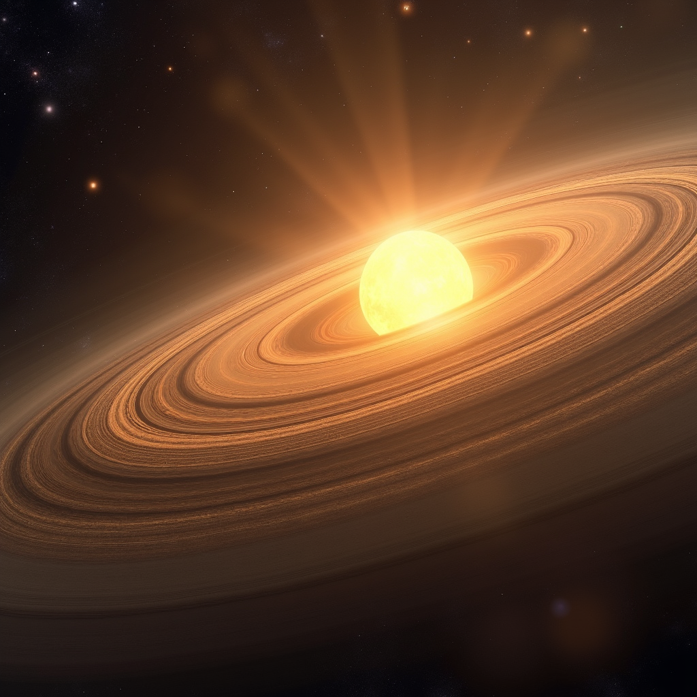
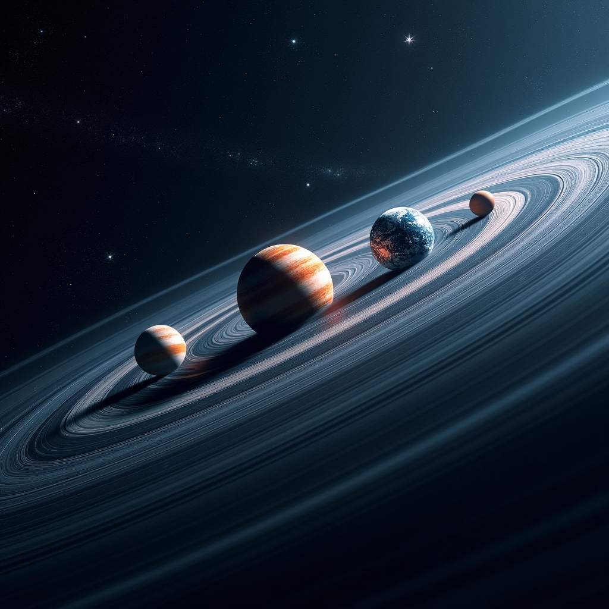
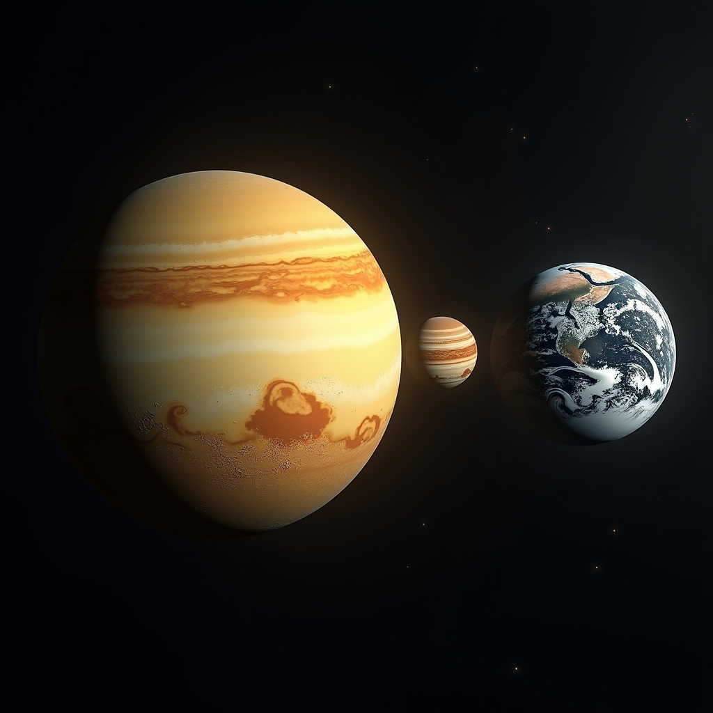

The Planets of the Solar System
The solar system consists of eight planets orbiting the Sun, classified into two distinct categories: rocky planets (or terrestrial) and gaseous planets (or giants). This organization was formalized by the International Astronomical Union in 2006, during the revision of the classification of celestial bodies. The planets formed approximately 4.6 billion years ago from a disk of dust and gas surrounding our young star.
The Terrestrial Planets
The first four planets in the solar system are the rocky planets. Mercury, the closest to the Sun, completes its orbit in only 88 Earth days and has a daytime temperature reaching 430°C. Venus, discovered to be very similar to Earth in size, proves to be the hell of the solar system with a dense atmosphere composed of 96.5% carbon dioxide and atmospheric pressures 92 times greater than Earth's.
Earth, our home planet, orbits approximately 150 million kilometers from the Sun, a distance that became the unit of measurement called Astronomical Unit (AU). It completes its orbit in 365.25 days and possesses a unique atmosphere composed of 78% nitrogen and 21% oxygen, allowing life as we know it. Mars, the red planet, has fascinated astronomers for centuries. With a diameter of 6,779 kilometers, it is twice smaller than Earth and orbits at an average distance of 1.52 AU from the Sun. Recent missions have confirmed the presence of water ice beneath its surface.
The Gaseous and Icy Giants
Jupiter, the largest planet in the solar system, has an equatorial diameter of 142,984 kilometers. Its Great Red Spot, an atmospheric anticyclone, was first observed in 1664 by scientist Robert Hooke and persists today, although it has decreased in size. Jupiter completes an orbit around the Sun in 12 Earth years and has at least 95 confirmed moons, including the four large Galilean moons discovered in 1610: Io, Europa, Ganymede and Callisto.
Saturn, famous for its impressive ring system, orbits at an average distance of 9.54 AU from the Sun. These rings, composed mainly of water ice and rock, extend to approximately 282,000 kilometers in diameter although their thickness generally does not exceed one kilometer. Saturn has 146 known moons, the most notable being Titan, which possesses a dense atmosphere and lakes of liquid methane.
Uranus, discovered in 1781 by William Herschel, orbits at 19.19 AU from the Sun and has a remarkable peculiarity: its axis of rotation is inclined at 98 degrees, meaning it rotates practically on its side. Neptune, the most distant of the planets, orbits at an average distance of 30.07 AU and completes a full orbit in 165 Earth years. Its atmosphere, composed mainly of hydrogen and helium, generates the fastest winds in the solar system, reaching speeds of 2,100 kilometers per hour.
Timeline of Planetary Discovery
- Mercury, Venus, Mars and Jupiter: known since Antiquity by ancient civilizations
- Saturn: observed with the naked eye since Antiquity, its rings discovered in 1610 by Galileo
- Uranus: discovered on March 13, 1781 by William Herschel
- Neptune: discovered on September 23, 1846 by Johann Galle
- Pluto: discovered on February 18, 1930 by Clyde Tombaugh (reclassified as a dwarf planet in 2006)
Characteristics and Key Data
- Total distance between Mercury and Neptune: approximately 59.5 billion kilometers
- Combined mass of all planets: approximately 2.7 Earth masses
- Jupiter alone represents 71% of the total mass of all planets
- Average orbital period of the solar system: 1 light-year every 230 million years
- Total number of known moons in the solar system: more than 200
- The asteroid belt between Mars and Jupiter: contains millions of rocky objects
The Importance of Planetary Exploration
The exploration of the planets in the solar system has revolutionized our understanding of the universe. Space missions such as Mariner 10 to Mercury in 1974, Magellan to Venus from 1989 to 1994, and the Curiosity and Perseverance rovers on Mars since 2012 have provided invaluable data. The Voyager 1 and 2 probes, launched in 1977, have traversed the solar system and continue to transmit scientific data.
Habitable Zones and the Search for Life
The "habitable zone" or "Goldilocks zone" of the solar system represents the region where liquid water could exist on the surface of a planet. Currently, only Earth is clearly located in this zone, although Mars had conditions favorable to life approximately 3.8 billion years ago. The moons of Jupiter and Saturn, notably Europa and Enceladus, present potentially favorable conditions for microbial life beneath their icy surfaces, with underground oceans possibly containing more water than all Earth's oceans combined.
Carl Sagan, astronomer and science communicator, stated: "The solar system is our backyard, the universe is our neighborhood. Understanding the planets that surround us is to understand our place in the cosmos and our responsibility toward this fragile world that we inhabit."



